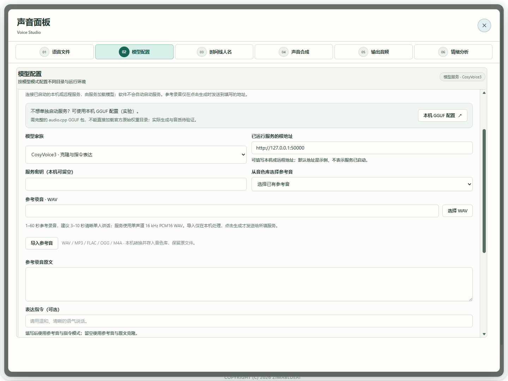

场景教程
保留音色，调整语气与情绪
用同一文本做 A/B 试听，只调整所选后端支持的表达。
你能得到什么
得到普通版本和表达调整版本，逐项试听后保留合适的结果。
开始前准备
- 先完成一次克隆试音；保持相同模型、参考音、文本与语言，才能有意义地比较表达。
- Index 使用「情绪提示」；CosyVoice 的指令模式使用「表达指令」；Fish 在合成文本中使用表达标签。Vox、FireRed 和 VibeVoice 不应套用 Index 参数。
- 想让生成声音更开心、平静或激动，请继续本篇；想判断已有录音的情绪，打开「语音工具 → 06 情绪分析」，或点击「分析已有录音」查看步骤。情绪分析需要带九类分类层的兼容 ONNX，官方原始权重及仅输出特征的 ONNX 不能直接替代。分析结果不会自动改变克隆参数或会议标签；情绪遵循度与声纹质量尚未全面验收。
逐步操作
- 01
先生成普通版本并保留 A
按克隆指南生成一段短文本，先不填写额外情绪。试听通过后，在「A/B 音色对比」保留当前结果为 A。下载或保存才能长期留存；A/B 暂存仅属于本次应用会话。

真实软件界面 · 点击放大；图中示例数据不代表你的结果 - 1检查和生成固定在编辑区上方。
- 2文件检查通过后仍需实际试听。
- 02
Index：展开生成选项，填写情绪提示
保持文本和参考音不变，展开「生成选项」，在 Index 的「情绪提示（可选）」填写期望表达，再回到编辑区上方固定操作区「生成克隆语音」，保留为 B。不要把情绪提示写进「参考录音原文」。情绪字段在生成选项内，按需向下滚动；生成、取消与状态留在上方。若同时更换参考录音，先重新检查，再生成 B，不把两个参考条件当作同一组 A/B。
真实软件界面 · 点击放大；图中示例数据不代表你的结果 - 1检查和生成固定在编辑区上方。
- 2文件检查通过后仍需实际试听。
- 03
CosyVoice／Fish：使用各自表达方式
已运行 CosyVoice 服务选择支持表达指令的克隆模式，写希望的语气或语速。Fish 使用表单的「插入表达标签」，例如 [whisper]、[excited]；插入的是合成文本，不是录音原文。服务必须真正支持该模式，连接成功不保证表达遵循。

真实软件界面 · 点击放大；图中示例数据不代表你的结果 - 1不使用独立服务时，打开对应模型的本机 GGUF 配置；实际生成待验。
- 2选择已在服务中加载的模型。
- 3填写已启动的本机或远程服务地址，默认地址只是示例。
- 4选择参考录音，点击生成才发送到所填服务。
- 04
切换试听 A/B，确认后保存
使用相同文本切换试听 A/B。分别检查读音、音色是否稳定、情绪是否恰当，以及停顿有没有明显变化。过强或不合适时减弱提示后重试；不要把波形不同当作情绪正确。满意后保存 B，也保留普通版本。
真实软件界面 · 点击放大；图中示例数据不代表你的结果 - 1检查和生成固定在编辑区上方。
- 2文件检查通过后仍需实际试听。

怎么知道成功
两个版本都能播放，并能通过试听说明哪一处表达更合适；文件与参数可追溯。
遇到问题
没有可用的情绪字段
先确认后端支持的表达方式。字段不存在或不可操作时，按所选模型的指令／标签方式处理，不把其他参数当作情绪控制。
听不出差别／音色漂移
保留失败结果，减弱或改写提示，固定参考和文本再试；目前需逐条试听，不保证所有语言和情绪都有效。